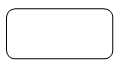

Offset Edge command
Use the Offset Edge command  to offset the selected edges to create an imprint of them on a part or surface by
a given distance and direction. You can use this command in synchronous and ordered
environments in part and sheet metal models.
to offset the selected edges to create an imprint of them on a part or surface by
a given distance and direction. You can use this command in synchronous and ordered
environments in part and sheet metal models.
Eligible selected edges must form a closed loop on the same plane, or a tangentially continuous chain of edges that do not lie on a planar face. You can select multiple edges from the same solid or surface, or edges across multiple solids and surfaces.
-
A closed loop that is tangentially connected:

-
A closed loop that is not tangentially connected:

For finite element analysis models that contain representations of bolts, you can use the Offset Edge command to produce better meshing results around bolt holes. In this application, the command generates offset faces to represent where each bolt, nut, and washer come in contact with a hole. This produces more nodes for the spider mesh to connect to and a better representation of the bolt.
You can use the Derived Curve command to produce a new curve that is derived from one or more input curves.